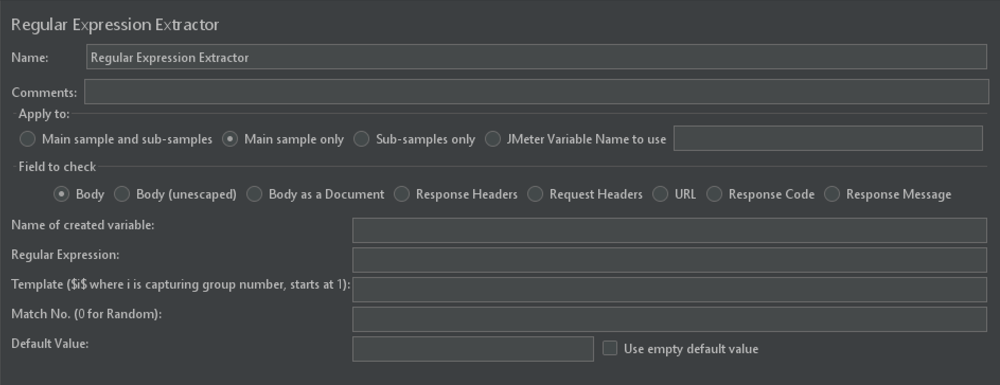
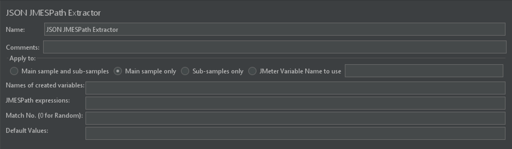

7 JMeter关联陌生又熟悉¶

JMeter关联是什么¶
JMeter关联，这几个字看着可能会有点陌生，实际上却是工作中经常会做的一件事情，尤其是接口自动化，它指的是把一个接口的响应作为另一个接口的参数，从而把接口关联起来。
JMeter关联是通过后置处理器来实现的，本文将介绍两个主流提取器：正则表达式提取器和JSON JMESPath提取器。
正则表达式提取器¶

Name¶
最好有业务含义的名称。
Comments¶
可以为空的注释。
Apply to¶
匹配范围。
Main sample and sub-samples
匹配当前父取样器及其子取样器。
Main sample only
仅匹配当前父取样器。
Sub-samples only
仅匹配子取样器。
JMeter Variable Name to use
匹配JMeter变量。
Field to check¶
匹配响应的字段，共七个选项。
Body：主体，最常用。
Body(unescaped) ：替换了所有的html转义符的响应主体内容，注意html转义符处理时不考虑上下文，因此可能有不正确的转换，不太建议使用。
Body as a Document：从不同类型的文件中提取文本，注意这个选项比较影响性能。
Response Headers：响应Headers。
Request Headers：请求Headers。
URL：请求URL。
Response Code：响应代码，比如200、404返回码。
Response Message：响应信息，比如“成功”、“OK”字样。
Name of created variable¶
创建的变量名，比如变量名为token，通过${token}进行访问。
Regular Expression¶
正则表达式。
正则表达式可阅读这篇文章进一步了解：https://dongfanger.gitee.io/blog/未分类/001-5分钟轻松学正则表达式.html
Template($i$ where i is capturing group number, starts at 1)¶
用$$引用起来，如果在正则表达式中有多个正则表达式（多个括号括起来的），则可以是$1$、$2$等等，$1$指第一个模板，$2$指第二个模板，依次类推，$0$指全文匹配，$1$$2$指同时取第一个和第二个模板。
Match No.(0 for Random)¶
在匹配时往往会出现多个值匹配的情况，如果匹配数为0则代表随机取匹配值；可以用匹配数字来确定多个值中的哪一个；负数取所有值，可以与For Each Controller一起使用来遍历。
Default Value¶
默认值，如果没有匹配到可以指定一个默认值。
Use empty default value勾选后把空作为默认值，跟不填写效果一样。如果填写了默认值同时勾选此选项，默认值仍然为空。
JSON JMESPath提取器¶

Name¶
最好有业务含义的名称。
Comments¶
可以为空的注释。
Apply to¶
匹配范围。
Main sample and sub-samples
匹配当前父取样器及其子取样器。
Main sample only
仅匹配当前父取样器。
Sub-samples only
仅匹配子取样器。
JMeter Variable Name to use
匹配JMeter变量。
Name of created variable¶
创建的变量名，比如变量名为token，通过${token}进行访问。
Match No.(0 for Random)¶
在匹配时往往会出现多个值匹配的情况，如果匹配数为0则代表随机取匹配值；可以用匹配数字来确定多个值中的哪一个；负数取所有值，可以与For Each Controller一起使用来遍历。
Default Value¶
默认值，如果没有匹配到可以指定一个默认值。
小结¶
本文首先介绍了JMeter关联的概念，实际上指的就是把一个接口的响应作为另一个接口的参数，从而把接口关联起来。然后分别以元件编辑区为内容，讲解了JMeter关联常用的两个后置处理器：正则表达式提取器和JSON JMESPath提取器。